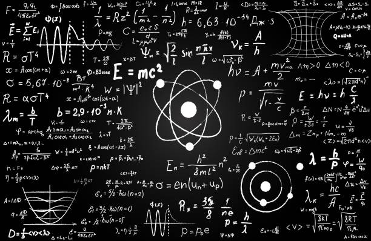
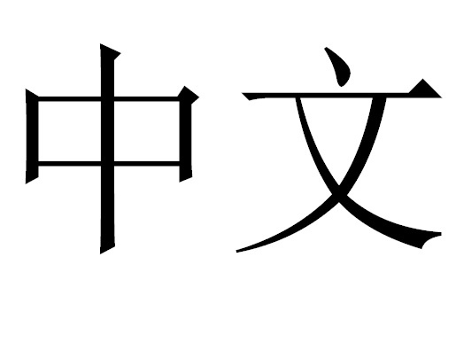
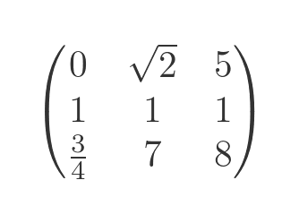
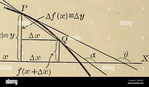

Xidian University
西安电子科技大学
School of Mathematics
School of International Students
🔐
Student Login
My Subjects

Open →
University Physics
👨🏫 Li Tanping
Open →
Public Chinese
👩🏫 Chen Yun
Open →
Higher Algebra
👨🏫 Yu Sen
Open →
Mathematical Analysis
👨🏫 Peng Shen & Zhu Qiang📅 Weekly Schedule
📋 ICS Program
📖
Chapters & Learning
Course content, summaries and notes
✏️
Exercises
Practice problems and solutions
📝
Exams
Past exams and exam preparation
🔗
Useful Links
Resources, videos and references
Chapters
Parts
Titles
📄